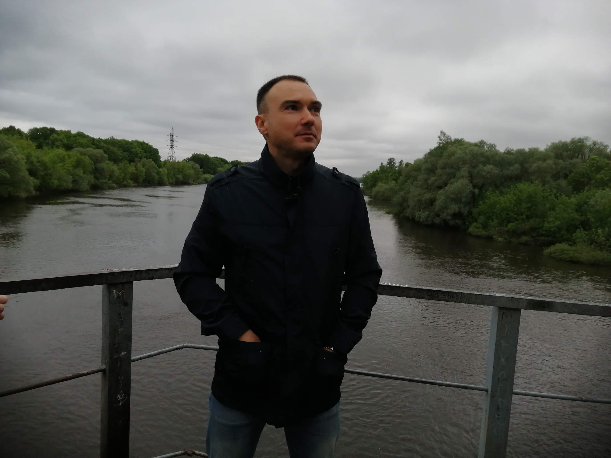

Алексей Ушаков
Инженер ПНР

Локация
Брянск
Контакты
☎+7 (980) 335 86 97
Варианты трудоустройства
Занятость:
полная, частичная
График:
офис, удаленная работа
Переезд:
возможен
Командировки:
готов
Навыки
Пусконаладочные работы
Работа с инструментом
Монтаж оборудования
Техническое обслуживание
Монтаж оптоволокна
Опыт работы
Мастер участка:
"ЗАО УК БМЗ"
(08.2008 – 07.2009 (руководством техпроцессом металлообработки коленвала судового двигателя)
Главный инженер:
ОАО "Хлебогор" филиал "Жуковский хлебозавод"
(10.2009 – 09.2010 (руководство техническими службами предприятия)
Ведущий инженер, начальник участка:
PetroFibre
(09.2010 –
настоящее время
) (пуско-наладочные работы системы мониторинга протяженных объектов.)
Образование
Брянский государственный технический университет
– Автоматизация технологических процессов и производств
Языки
Русский – родной
Английский – Intermediate, чтение технической документации
Хобби
Спорт, программирование, чтение книг